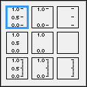
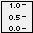
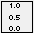
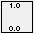
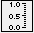
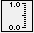

Short Name: Style
Requires: Base Development System
Class: Scale Properties
To Use: Create a property.
Gets or sets the style of the marks on a scale. The values (0-8) for this property correspond with the options on the Style shortcut menu, available by right-clicking a scale on a graph or chart and selecting Style, from top-left (0) to bottom-right (8).
This property is similar to the Style item on the shortcut menu of a scale.
The following image shows the Style shortcut menu:
Refer to the following table for a description of each value:
| Value | Icon | Description |
|---|---|---|
| 0 |  | Displays evenly-spaced, periodic values and marks for each of those values. |
| 1 | Displays only the endpoint values and marks for endpoint values with no values or marks in between. | |
| 2 | Displays evenly-spaced, periodic marks with no values. | |
| 3 |  | Displays evenly-spaced, periodic values with no marks. |
| 4 |  | Displays only the endpoint values with no marks and no values or marks in between. |
| 5 | Displays no values or marks. | |
| 6 |  | Displays evenly-spaced, periodic values and marks for each of those values as well as incremental marks in between values. |
| 7 |  | Displays only the endpoint values and marks for endpoint values as well as incremental marks in between endpoint values. |
| 8 | Displays evenly-spaced, periodic marks with no values as well as incremental marks in between. |
The following table lists the characteristics of this property.
| Data type | |
| Permissions | Read/Write |
| Available in Run-Time Engine | Yes |
| Available in Real-Time Operating System | Yes |
| Settable when the VI is running | Yes |
| Loads the front panel into memory | No |
| Need to authenticate before use | No |
| Loads the block diagram into memory | No |
| Remote access allowed | Yes |